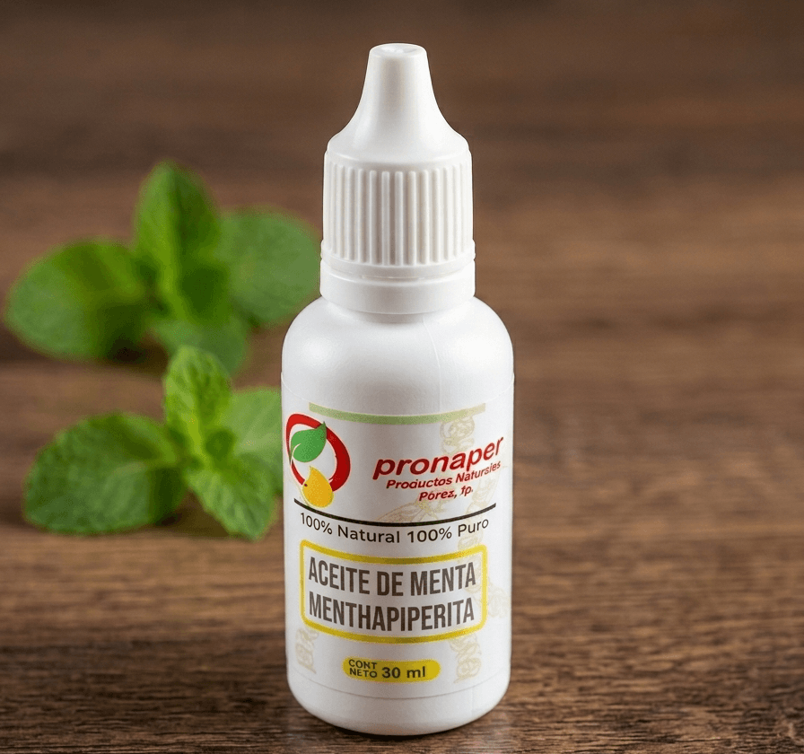
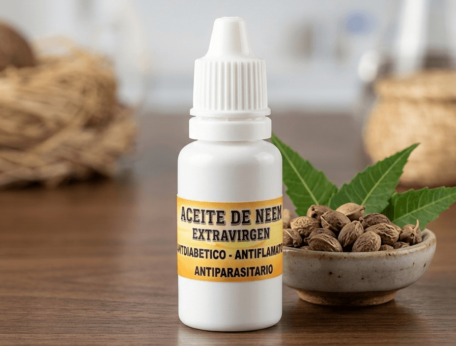
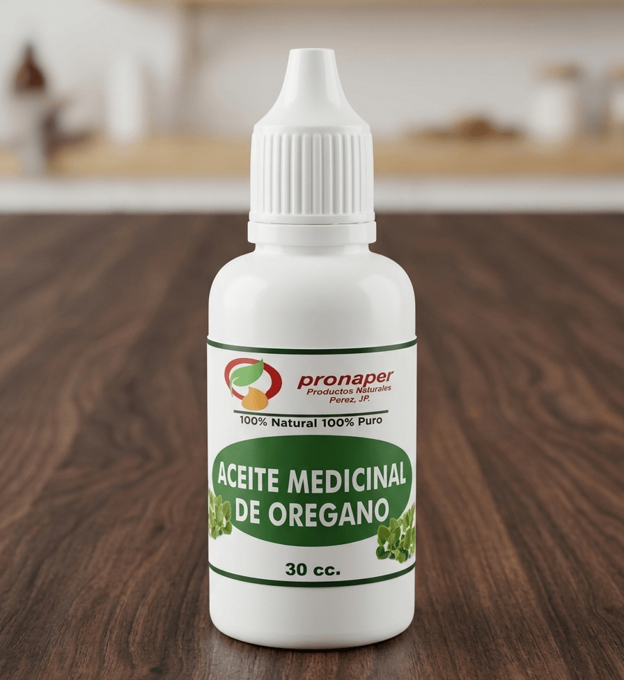

Extracto Fluido de Ajo Negro
Potente antioxidante natural que apoya el sistema cardiovascular e inmunológico.

Extracto Fluido de Cebolla Negra
Rico en flavonoides y quercetina. Soporte respiratorio y microcirculatorio.

Extracto de Limón Negro
Alto contenido de Vitamina C concentrada y polifenoles desintoxicantes.

Ajo Negro con Miel
Fusión sinérgica ideal para reforzar defensas y aportar energía natural diario.

Extracto de Mucuna (Mucuna Pruriens)
Fuente natural de L-DOPA. Apoya la función nerviosa, estado de ánimo y vitalidad.

Extracto de Ricino (Aceite Extra Virgen)
Prensado en frío. Excelente para nutrición capilar, folicular y limpieza intestinal.

Aceite Medicinal de Coco Extra Virgen
Rico en Ácido Láurico y TCM para soporte metabólico e intestinal.

Aceite de Linaza Extra Virgen
Fuente vegetal concentrada de Omega 3 (ALA) para el cuidado cardiovascular.

Aceite de Aloe Vera Estabilizado
Regenerador epitelial y mucoso. Ideal para digestión y cuidado de la piel.

Extracto de Clavo de Olor
Concentrado rico en eugenol. Propiedades analgésicas y digestivas.

Extracto de Menta
Acción refrescante, espasmolítica y descongestionante bucofaríngea.

Extracto de Neem
Purificante natural, regulador metabólico de la glucosa y protector cutáneo.

Extracto de Orégano (Aceite Medicinal)
Alto en carvacrol. Antiséptico y antimicrobiano natural de amplio espectro.